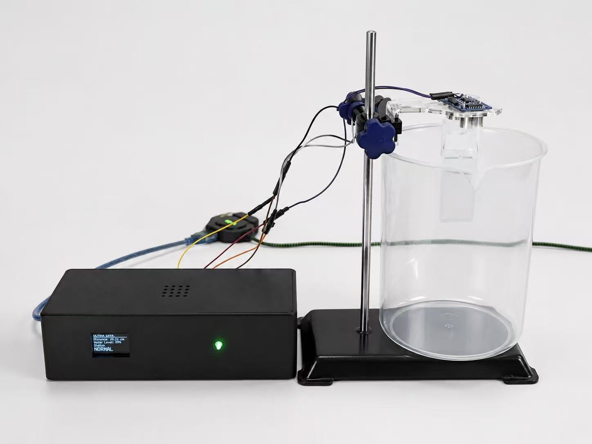

A low-cost edge monitoring node for combined sewer overflow infrastructure — sensing, deciding and alerting locally, without the cloud.

During heavy rainfall, combined sewers exceed capacity and discharge diluted untreated wastewater directly into rivers and coastal waters.
Source: Environment Agency Event Duration Monitoring data.
Drag the water level in the chamber — the node classifies the state locally, exactly as the physical prototype does.
Water level is safely below the warning threshold. The node reports normal status locally.
This mirrors the exact threshold logic running on the physical prototype — the same 45 / 65 / 85% boundaries evaluated on the Arduino, every 0.7 seconds, with no cloud connection.
The HC-SR04 ultrasonic sensor measures distance to the water surface — non-contact, repeatable.
An Arduino UNO converts distance into estimated water level — entirely at the edge.
Threshold logic assigns one of four states: Normal, Warning, High Risk or Critical.
OLED status, colour-coded LED, and a buzzer at Critical — visible and audible on-site.
Validated in controlled bench testing as a laboratory proof of concept. Not yet field-ready — and we say so.
Critical opinions are the most useful kind. Five minutes of your honesty shapes the next iteration.
Answer 6 short questions